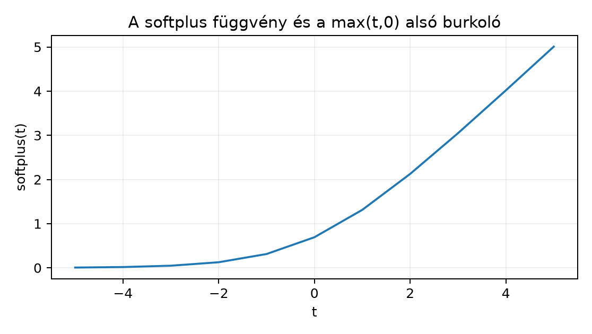
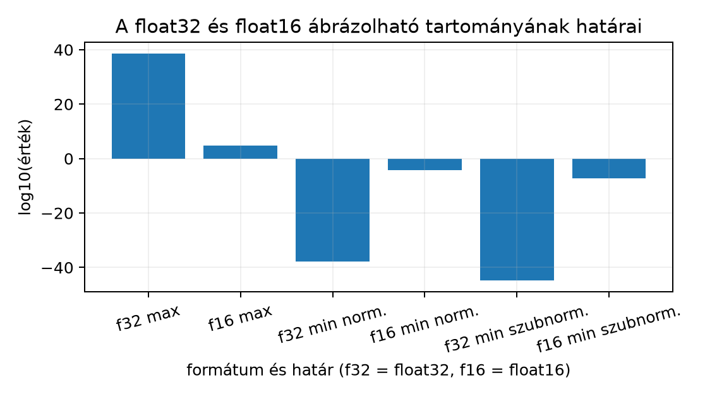

Ez az alfejezet a 7.3. Bináris, multilabel és
regressziós cél alfejezetben bevezetett lossok bemeneti előírásait
(a továbbiakban: loss-előírások) vizsgálja a lebegőpontos implementáció
oldaláról. Cél, hogy a hallgató meg tudja mondani, miért ad egy naiv
képlet véges helyett NaN vagy inf értéket nagy
logitokra, és hogyan őrizhető meg a matematikai jelentés a
cross-entropy, a BCE és a kapcsolódó számítások során. Előismeret:
alapvető Python/NumPy, logits és target alakok, softmax és BCEWithLogits
definíciója, valamint a float32 alapvető korlátai.
Induló kérdés: ha
,
akkor a
képlet matematikailag jól definiált. Miért számíthat mégis
NaN-t egy float32 NumPy implementáció, és melyik egyetlen
kivonás teszi stabillá? A válasz röviden: float32-ben
túlcsordul (overflow), a számláló és a nevező is inf, a
hányados inf/inf=NaN; a
kivonása után viszont minden kitevő
,
ezért minden exponenciális érték legfeljebb
,
az összeg pedig a
intervallumba esik. A részletes indoklás a következő szakaszokban
következik.
Legyen logit-mátrix, egy sor . A softmax definíciója:
A cross-entropy logitsból közvetlenül a log-softmax (a softmax logaritmusa, más néven logsoftmax) negáltját használja:
Programozói értelemben a két alak nem ugyanazt a műveleti sorrendet
jelenti. A naiv út először exponenciálist számol: float32-ben
,
ami meghaladja a legnagyobb normális float32 értéket
(),
ezért inf lesz. A számláló és a nevező is inf,
a hányados NaN; a logaritmus sem menti meg. Az
alulcsordulás (underflow) ellentétes irányú:
float32-ben 0, így a
-inf. Mindkettő az exponenciális függvény dinamikus
tartományából fakad, nem a loss matematikai hibájából.
A stabilitás alapja egy azonosság, amelyet most tételként mondunk ki és bizonyítunk. Jelölje
a log-sum-exp (más néven logsumexp, röviden lse) függvényt.
Tétel (log-sum-exp eltolási azonosság). Legyen és . Ekkor
Bizonyítás. A jobb oldalból indulunk ki. A kitevő azonossága miatt , tehát
A logaritmus szorzat-azonossága szerint , ezért a log a szorzatból összeg lesz:
Mivel a természetes logaritmus és az exponenciális egymás inverze, . Így
A feltételek pontosan a következők: véges valós számok, véges valós, a logaritmus argumentuma pozitív — ez teljesül, mert minden -re. A bizonyítás befejezett.
Stabil választás. Válasszuk értéket, és jelölje ezt a maximumot. Ekkor , ezért , és az összeg a intervallumba esik. A véges, nem csordul túl. A gyakorlatban tehát
a log-softmax pedig
A softmax maga, ha a predikciót is ki akarjuk írni,
ugyancsak a max-eltolással stabil.
A PyTorch nn.CrossEntropyLoss dokumentációja [D07]
szerint a számítás log-softmax és negatív log-likelihood (NLL)
kombinációja; az NLL itt a helyes osztályhoz tartozó log-valószínűség
negáltja. A függvény logitsot vár, tehát a hívó nem
alkalmaz előtte softmaxot, és osztályindex-céloknál a cél int64 tömbje
alakú; alternatívaként
alakú, osztályonkénti valószínűségi cél is megadható megfelelő
lebegőpontos típussal. Az alapesetben az int64,
alakot használjuk. A PyTorch 2.15.0 a cél dtype-ját szigorúan ellenőrzi:
osztályindexként int64 vagy uint8 fogadható
el, float cél csak
alakban; a
alakú float cél
RuntimeError: expected target dtype to be Long or Byte, but got Float
hibát ad. A float valószínűségi cél értékeit viszont a könyvtár nem
ellenőrzi: negatív vagy nem
-re
összegző értékek is átmennek, és csendben hibás loss-t adnak (a PyTorch
2.15.0-ban mérve). A dokumentáció által támogatott
reduction érték mean, sum és
none; az itteni példák mean-t használnak.
A laborban a könyvtári kimenetet float64-es, külön megírt számításhoz hasonlítjuk: ez a dokumentált bemeneti és redukciós viselkedés numerikus ellenőrzése, nem a könyvtár belső implementációjának bizonyítása. A matematikai azonosság, amelyet fent bizonyítottunk, a stabil implementáció alapja.
log1p és a
BCEWithLogits stabil alakjaA 7.3. Bináris, multilabel és regressziós cél alfejezetben bevezetett BCEWithLogits veszteség naiv alakja
Ha
nagyon negatív,
float32-ben nullává válik; ekkor a naiv képletben
-inf, így
esetén a veszteség
,
esetén pedig a
szorzat miatt NaN. Ha
nagy pozitív, a
tag nullázódik, és ugyanez történik ellentétes szereposztásban. A stabil
formula az
-tól
függő algebrai átalakítást használ:
ahol
A számítására a
alak praktikus, mert
miatt a logaritmus argumentuma
-ben
van. Az
kis
-re
közel
,
nagy
-re
viszont majdnem nulla, és ilyenkor az
hozzáadása után a log elveszítheti a kis tagot (nagy
esetén a
tag elnyelődik az
-ben).
Erre való a log1p függvény:
amely kis
esetén lényegesen pontosabb, mint a naiv np.log(1+x), mert
a könyvtár közvetlenül a
tag alapján, nem az
kerekített értékéből számol. Például
esetén log1p(x) körülbelül
,
míg 1+x float64-ben kerekítve
,
a log pedig
.
Ugyanez a helyzet a softplus nagy
ágán:
esetén
,
az np.log(1+np.exp(-40.0)) értéke 0.0, míg
np.log1p(np.exp(-40.0))
,
mert az
float64-ben
-re
kerekítődik.
A stabil alak levezetése a naiv definícióból: miatt , továbbá , ezért . Behelyettesítve
ahol az utolsó lépésben a azonosságot használtuk. A 7.3. Bináris, multilabel és regressziós cél alfejezet ugyanezt a veszteséget definiálja; a stabil alak itt a megvalósítás eszköze.

A képletből számolt szemléltetés, nem mérés. Nagy |t|-re softplus(t) ≈ max(t,0), a különbség log1p(exp(-|t|)).
A clipping vágás azt jelenti, hogy egy értéket korlátos
intervallumba szorítunk. Ha a felhasználó a predikált valószínűséget
-ként
naplózza, és abból később
-t
vagy entrópiát számol, akkor a
érték -inf-et adna. Egy lehetséges gyakorlat
ahol kicsi, tipikusan körüli. Ez a jelentéskészítés vágása: biztosítja, hogy a lementett predikció logaritmusa véges legyen.
Fontos határ: a tanítási loss logitjait nem szabad
így vágni. Ha a cross-entropy bemenetét clipeljük, megváltozik a
gradiens jelentése: a
tartományban a
leképezés deriváltja nulla, ezért a modell nem tud a
-nél
nagyobb konfidenciára tanulni, és a kalibráció is torzul. A kalibráció
itt a prediktált valószínűség és a megfigyelt gyakoriság egyezését
jelenti: vágás nélkül a modell nagy logitoknál is követheti a
tanítóadatot, vágással viszont a kalibrációs görbéje eltér ettől. A
vágás tehát output-utófeldolgozás, nem a numerikus stabilitás tanítási
trükkje. Ez heurisztika, mert az optimális
feladatonként eltérhet; az ellenőrzési terv: a val spliten
több
értékre (például
,
,
)
számoljuk a naplózott valószínűségek negatív log-likelihood-ját, és a
legnagyobb olyan
-t
választjuk, amelynél az NLL eltérése a nem vágott értéktől a
relatív tolerancián belül marad.
A float16 számformátum tartománya jóval szűkebb: a legnagyobb normális érték , a legkisebb pozitív normális , a szubnormális (a legkisebb normálisnál is kisebb, csökkentett pontosságú) tartomány még kisebb, legkisebb pozitív értéke . Ezért float16-ban már esetén , ami túlcsordul. A log-sum-exp max-eltolása itt még kritikusabb, mint float32-ben.

A bináris formátum határaiból számolt log10 értékek (nem mérés): a legnagyobb normális, a legkisebb normális és a legkisebb szubnormális érték.
Az automatikus kevert pontosság (AMP) egy gyakori lépése a loss scaling: mivel a hátraterjesztés során a veszteség gradiense gyakran olyan kicsi, hogy float16-ban nullává válna, a veszteséget egy nagy skalárral megszorozzák a skálázott hátraterjesztéshez, majd a frissítés előtt visszaosztanak. Például egy nagyságú gradiens a float16 legkisebb pozitív szubnormális értéke () alatt van, ezért nullává válik; -es skálázással lesz, ami már ábrázolható, és a frissítés előtti visszaosztás után az eredeti értéket adja vissza. Ez a jelen egységben csak előkép; a teljes GPU/AMP-labort a 24.3. Mixed precision és nagyobb batch tárgyalja. A cél itt az, hogy a hallgató tudja: a stabil matematikai formula a float16 környezetben is ugyanaz, de a tartományhatárok miatt az ellenőrzés szigorúbb.
Legyen , a helyes osztály indexe (a Python 0-tól indexel, ezért az 1-es index a második komponenst, az 501-et jelöli; ugyanezt a beállítást használja a labor is). A maximum . A max-eltolás után
Az exponenciális összeg:
A log-sum-exp:
A log-softmax:
A második komponens negáltja, a veszteség . Ellenőrzésképp a softmax valószínűségek:
amelyek összege
kerekítési hibán belül. A naiv float32 softmax ezzel szemben
inf/inf = NaN-t adna.
Előfeltétel. Python 3.12 és a cnn-labor
csomag (uv sync); a labor a szakasz kódját használja, a
szükséges csomagokat a laborcsomag rögzített környezete biztosítja.
A labor célja a három implementáció összevetése egy float64 referencia ellen. A következő kimenet a kód futtatásával kapott mért eredmény (Python 3.12.3, NumPy 2.5.4, PyTorch 2.15.0+cpu, CPU, OMP_NUM_THREADS=1; determinisztikus, seed nem szükséges).
Munkakönyvtár: lab/. Futtatási parancs:
python n028_stability.pyA szkript:
import numpy as np
import torch
import torch.nn as nn
# A példa determinisztikus: rögzített bemenet, véletlen szám nem kell
device = "cpu"
# Input: N=4, K=3 logits, float32; target int64
logits32 = np.array([
[ 500.0, 501.0, -501.0],
[ 2.0, 1.0, 0.0],
[-500.0, 500.0, 500.0],
[ 10.0, -10.0, 20.0],
], dtype=np.float32)
target_np = np.array([1, 0, 2, 2], dtype=np.int64)
# float64 kontroll: a float64 tartományban 500 még véges
z64 = logits32.astype(np.float64)
lse64 = np.log(np.exp(z64).sum(axis=1, keepdims=True))
logp64 = z64 - lse64
ref = -logp64[np.arange(logits32.shape[0]), target_np].mean()
print("float64 control:", ref)
def naive_nll(logits, target):
# Szándékosan naiv: először softmax, majd log
expz = np.exp(logits) # float32: túlcsordulás
probs = expz / expz.sum(axis=1, keepdims=True)
logp = np.log(probs) # 0-ból -inf
return -logp[np.arange(logits.shape[0]), target].mean()
def stable_nll(logits, target):
# log-sum-exp max-eltolással, közvetlen log-softmax
m = logits.max(axis=1, keepdims=True)
shifted = logits - m
s = np.exp(shifted).sum(axis=1, keepdims=True)
lse = m + np.log(s)
logp = logits - lse
return -logp[np.arange(logits.shape[0]), target].mean()
loss_fn = nn.CrossEntropyLoss()
t_logits = torch.from_numpy(logits32).to(device)
t_target = torch.from_numpy(target_np).to(device)
with torch.no_grad():
torch_mean = loss_fn(t_logits, t_target).item()
naive_val = naive_nll(logits32, target_np)
stable_val = stable_nll(logits32, target_np)
print("naive float32:", naive_val)
print("stable float32:", stable_val)
print("torch float32:", torch_mean)
print("abs stable-ref:", abs(stable_val - ref))
print("abs torch-ref :", abs(torch_mean - ref))
# A stabil implementációk a float32 kerekítési hibán belül egyeznek a float64 kontrollal
assert np.isnan(naive_val)
assert abs(stable_val - ref) < 1e-5
assert abs(torch_mean - ref) < 1e-5Mért kimenet (Python 3.12.3, NumPy 2.5.4, PyTorch 2.15.0+cpu, CPU, OMP_NUM_THREADS=1; determinisztikus, seed nem szükséges):
float64 control: 0.353515057855461
naive float32: nan
stable float32: 0.35351515
torch float32: 0.35351502895355225
abs stable-ref: 9.030738079562894e-08
abs torch-ref : 2.8901908755152306e-08A naiv ág RuntimeWarning: overflow üzenetet ír ki,
eredménye nan. A táblázat a négy minta
átlagos veszteségét mutatja; az értékek mért eredmények:
| Implementáció | dtype | Átlagos veszteség (mért) |
|---|---|---|
| float64 kontroll | float64 | 0.35351506 |
| naiv NumPy | float32 | nan |
| stabil NumPy | float32 | 0.35351515 |
| PyTorch CrossEntropyLoss | float32 | 0.35351503 |
Az egyes sorok vesztesége ettől eltér: például az első soré
(,
)
,
ami önmagában nem a négy sor átlaga. Ellenőrzés és
értelmezés. A szkript három assert-tel ellenőriz:
a naiv érték NaN, a stabil és a torch érték pedig
-nél
közelebb van a float64 kontrollhoz. A naiv érték nem véges, tehát a
stabilizálás nem kozmetikai javítás, hanem az eredmény létezését adja
vissza. A torch és a stabil NumPy egyezése a float32 kerekítési
hibahatáron belül van.
Tévedés: „Ha a veszteség NaN, elég
numerikus stabilizálást alkalmazni.” Ellenpélda: a hívó
fél a logitsra már softmaxot alkalmaz, vagy a célvektort float32-ként
adja át, és a veszteség még a stabil formulával is hibát jelez.
Tekintsük a következő hibás hívást:
probs = torch.softmax(logits, dim=1) # ez már valószínűség, nem logit
loss_fn(probs, target) # előírás megsértéseA CrossEntropyLoss logitsot vár [D07]; a softmax dupla alkalmazása
nem dob hibát, hanem csendben rossz értéket ad, mert a valószínűségeket
logitként értelmezi, és a gradiens is elromlik. Ugyanígy hibás a
bemeneti előírás, ha a target float32 típusú, de nem
alakú: a [D07] szerint float cél csak
valószínűségi célként fogadható el,
alakú float vektor nem. A hibát a bemeneti előírás ellenőrzése oldja
meg, nem a stabilitási trükk. A stabil log-sum-exp tehát szükséges, de
nem elégséges: előbb a matematikai előírást kell
helyesen teljesíteni. Ez az ellenpélda ezért API-használati hiba, nem
numerikus instabilitás; a numerikus instabilitást a labor mutatta
meg.
F1 (fogalmi, nehézség 1). Adja meg a túlcsordulás (overflow) és az alulcsordulás (underflow) definícióját, és mutasson egy-egy konkrét float32 példát a softmax környékéről. Beadandó: saját megfogalmazású definíciók és két konkrét számérték.
F2 (levezetési, nehézség 2). Bizonyítsa be, hogy a softmax invariáns a konstans eltolásra: minden -re, ahol a -dimenziós csupa egyes vektor. Ezután vezesse le a stabil képletet a választással. Beadandó: teljes levezetés és a végképlet.
F3 (implementációs, nehézség 2). Írjon
NumPy-függvényt, amely a BCEWithLogits veszteséget a stabil
softplus-képlettel számolja, és hasonlítsa össze egy float64
referenciaimplementációval. Bemenet:
z = np.array([[-1000.0, 0.0, 1000.0]], dtype=np.float32),
y = np.array([[0.0, 0.5, 1.0]], dtype=np.float32).
Beadandó: futtatható kód, a várt hiba
abszolút toleranciával.
F4 (hibakeresési, nehézség 2). Az alábbi kód hibás:
p = torch.softmax(logits, dim=1)
loss = nn.CrossEntropyLoss()(p, target_float)Azonosítsa mindkét hibát, javítsa a kódot, és ellenőrizze a javítást a , kézi eseten. Beadandó: a hibák megnevezése, javított kód és a kézi ellenőrzés értéke.
F5 (kísérleti/transzfer, nehézség 3). Tervezzen
kísérletet annak vizsgálatára, hogy a logits hőmérséklet-skálázása
hogyan hat a cross-entropy értékére és a predikciók szétterülésére egy
rögzített CNN-modellen. Használja a függelék A. szakaszában leírt
GlyphLab val és test splitjét a
scene_id (a jelenet azonosítója) megfigyelési egységgel,
egy előre rögzített modell-állapottal. Adja meg a protokollt, a változó
tényezőt, a baseline-t, a metrikát és a következtetési határt. Beadandó:
egy lehetséges terv, nem feltétlenül futtatott eredmény.
F1 megoldás. Túlcsordulás (overflow): olyan művelet,
amelynek eredménye nagyobb a reprezentálható legnagyobb értéknél;
float32-ben np.exp(np.float32(500.0)) inf-et
ad, míg float64-ben ugyanez
,
azaz még véges. Alulcsordulás (underflow): az eredmény abszolút értéke
kisebb a legkisebb reprezentálható normális értéknél, ezért nullává
kerekítik; float32-ben np.exp(np.float32(-500.0))
0.0 lesz, míg float64-ben
.
A softmax naiv nevezője túlcsordul, a számláló alulcsordulhat; az
eredmény inf/inf=NaN vagy 0/0=NaN.
F2 megoldás. A bizonyítás:
A második lépésben az exponenciális szorzat-azonosságát, a harmadikban a közös kiemelését használtuk; , ezért a törlés megengedett. Ebből a invarianciája is következik:
A stabil választás: , ekkor minden komponense nempozitív. Legyen . A fenti invariancia miatt
így
A korlát miatt a logaritmus argumentuma véges és pozitív, ezért a stabil alak minden véges -re véges értéket ad. A levezetés ezzel teljes.
F3 megoldás.
import numpy as np
z = np.array([[-1000.0, 0.0, 1000.0]], dtype=np.float32)
y = np.array([[0.0, 0.5, 1.0]], dtype=np.float32)
def stable_bce_with_logits(z, y):
# stabil softplus: max(t,0)+log1p(exp(-abs(t)))
t = -z
softplus = np.maximum(t, 0.0) + np.log1p(np.exp(-np.abs(t)))
return (1.0 - y) * z + softplus
def ref_bce_with_logits(z, y):
# float64 referencia a stabil alakból: logaddexp, elkerüli az exp/log-ot
z64 = z.astype(np.float64)
y64 = y.astype(np.float64)
return (1.0 - y64) * z64 + np.logaddexp(0.0, -z64)
print(stable_bce_with_logits(z, y))
print(ref_bce_with_logits(z, y))
print(np.abs(stable_bce_with_logits(z, y) - ref_bce_with_logits(z, y)).max())A várt eltérés
.
A referenciainak is stabilnak kell lennie: a float64-es exponenciális
felett már túlcsordul, ezért a naiv float64 sigmoid-alak
-nél
inf-et és
miatt NaN-t adna, és a különbség sem lenne értelmes. A
logaddexp-re épülő referencia ezt elkerüli; a stabil
float32 számítás és ez a referencia a mérés szerint
nagyságrendben egyezik. A naiv float32 ágon a
-hez
tartozó
,
,
-inf; a stabil formula ezt elkerüli.
F4 megoldás. A két hiba: (1) a
CrossEntropyLoss logitsot vár, nem softmax-kimenetet; (2) a
cél target_float float típusú, holott osztálycélként a
[D07] szerint int64 szükséges (float cél csak
valószínűségi célként érvényes,
alakban nem). Javítás:
loss = nn.CrossEntropyLoss()(logits, target.long())Ellenőrzés a
,
esetre: log-softmax
,
a negált log-valószínűség
.
A torch mean reduction egy minta esetén ugyanezt adja.
F5 megoldásminta. A hőmérséklet-skálázás
(temperature scaling) itt a logits
osztása egy
skalárral. Protokoll: rögzítsük egy, a GlyphLab (a könyv
képadata-halmaza) train splitjén tanított modell
state_dict-jét (a tanult paraméterek szótárát); a
val spliten
képekre és int64 célokra gyűjtsük a logitsokat. Változó
tényező:
;
a modell maga változatlan. Metrika: átlagos cross-entropy a skálázott
logitsokból és a predikált valószínűség maximumának átlaga, kontrollként
a val accuracy (a helyes predikciók aránya) rögzítve.
Baseline:
az eredeti logits. Kiértékelés: minden
-re
a val spliten számolt metrika; a kísérleti következtetés
csak a hőmérséklet hatását állapíthatja meg a rögzített modellen, nem
általános optimalitást. A hatás iránya előre tudható:
lágyítja az eloszlást (laposabb, nagyobb entrópiájú, ezért nagyobb
cross-entropy),
élesíti (csúcsosabb, kisebb entrópiájú), miközben az argmax és így az
accuracy változatlan maradhat. A test splitet legfeljebb
egyszer, a protokoll végén szabad használni. Megfigyelési egység a
scene_id, mert az egy jelenethez tartozó két nézet
(view_id 0 és 1) függő.
Ellenőrzési lista az alfejezethez: a log-sum-exp-tételben lépésenként
indokoltuk a kitevő- és logaritmus-azonosságokat; a max-eltolás után a
összeg
-ban
van; a kézi példában a softmax összege
kerekítési hibán belül; a labor toleranciája explicit (három
assert).
Visszatekintés 7.3. Bináris, multilabel és regressziós cél alfejezetből: a BCEWithLogits gradiense , így a stabil formula nem változtatja meg a tanítási jelet. Visszatekintés 6.4. Momentum és adaptív optimizálók alfejezetből: az Adam-epsilon a nevezőben egy kis additív tag, amely a nullával való osztást kerüli el; a max-eltolás ezzel szemben nem approximáció, hanem algebrai azonosság, amely a kitevőket nempozitívvá teszi, ezért a két fogalom csak céljában (numerikus védelem) hasonló, működésében nem. Visszatekintés 3.4. Sajátérték, SVD és spektrális határ alfejezetből: ha egy lineáris réteg súlyának spektrális normája nagy, a logitok szórása megnőhet, és ezzel csökken a softmax numerikus tartaléka, vagyis az a tényleges tartomány, ameddig az exponenciálisok még ábrázolhatók maradnak; a spektrális norma hasznos diagnosztikai eszköz, de nem helyettesíti a stabil formulát.
A naiv softmax és BCE implementáció nagy vagy kis logitokra
inf, -inf vagy NaN értéket adhat,
miközben a matematikai eredmény véges. A log-sum-exp konstanseltolási
azonossága szerint
,
és a
választás biztosítja, hogy az exponenciális összeg
-ban
maradjon. A log-softmax ebből közvetlenül számolható, a BCEWithLogits
pedig a
softplus-képlettel és log1p-pel stabilizálható. A labor
float64 kontrollon mutatja ki a naiv, a stabil és a könyvtári
implementáció viszonyát.
A 8.1. Kockázat, mintavétel és baseline egységben a kockázat, a mintavétel és a baseline fogalmát építjük fel; ott azt vizsgáljuk, hogy egy stabilan kiszámolt veszteség milyen tartalmi állításokat tesz lehetővé a modell várható teljesítményéről.